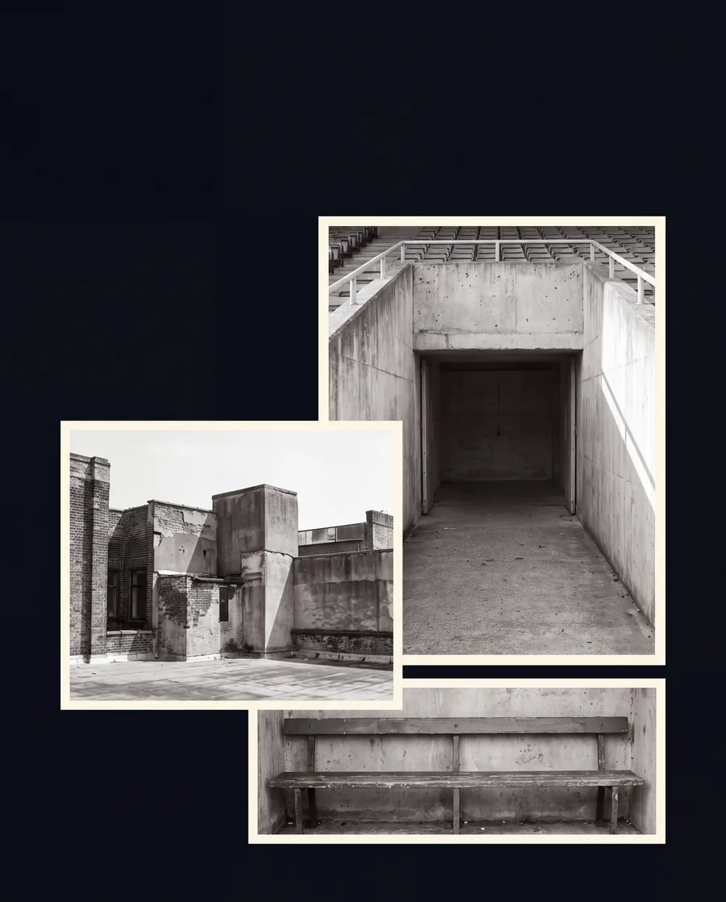

Cómo trabajamos
UNA CARRERA.UN EQUIPO ALREDEDOR.
DVP no se limita a negociar contratos. Construye un equipo alrededor del jugador para gestionar su carrera deportiva, su rendimiento, su patrimonio, su imagen y la vida después del fútbol.
- Representación · el núcleo: contratos, renovaciones, transferencias y plan de carrera.
- Performance · análisis, preparación física, nutrición y psicología.
- Brand · imagen, redes y patrocinios.
- Future · patrimonio y planificación.
Cómo trabajamos
UNA CARRERA.UN EQUIPO.

DVP no se limita a negociar contratos. Construye un equipo alrededor del jugador para gestionar su carrera deportiva, su rendimiento, su patrimonio, su imagen y la vida después del fútbol.
Representación · El núcleo
PRIMERO,EL FÚTBOL.
Contratos, renovaciones, transferencias y plan de carrera. Agentes con licencia y decisiones tomadas contigo, nunca por ti.
Representación · El núcleo
PRIMERO,EL FÚTBOL.
Contratos, renovaciones, transferencias y plan de carrera. Agentes con licencia y decisiones tomadas contigo, nunca por ti.

Performance · DVP Analytics + DVP Wellness
TU EQUIPOFUERA DEL CAMPO.
Coordinamos especialistas alrededor de una única prioridad: que estés preparado para rendir cuando llegue tu oportunidad. Cada dos semanas, una lectura de tus partidos y una sesión contigo.
Performance · Analytics + Wellness
TU EQUIPOFUERA DEL CAMPO.
Coordinamos especialistas alrededor de una única prioridad: que estés preparado para rendir cuando llegue tu oportunidad.
Analytics · Preparación física · Nutrición · Psicología · Técnica


Brand · Imagen, redes y patrocinios
TU IMAGENTAMBIÉN JUEGA.
Marca personal, redes sociales, patrocinios y campañas. Gestionamos tu imagen y las oportunidades comerciales que nacen de ella.
Brand · Imagen, redes y patrocinios
TU IMAGENTAMBIÉN JUEGA.
Marca personal, redes sociales, patrocinios y campañas. Gestionamos tu imagen y las oportunidades comerciales que nacen de ella.


Future · Patrimonio y planificación
TU PRESENTE.TU FUTURO.
Planeación de ahorro e inversión, análisis de proyectos y organización patrimonial. Decide con información y prepara tu vida después del fútbol.
Future · Patrimonio y planificación
TU PRESENTE.TU FUTURO.
Planeación de ahorro e inversión, análisis de proyectos y organización patrimonial. Decide con información y prepara tu vida después del fútbol.

La prueba
ASÍSE NOTA.
No es una lista de servicios. Es lo que recibes desde la primera semana y lo que puedes exigir después.
Casos y testimonios. Se publican solo con autorización escrita del jugador. Esta sección se completará con casos autorizados.
- Semana 1Diagnóstico y plan de carrera contigo y con tu familia.
- Cada 2 semanasReporte de rendimiento y sesión con el analista.
- Cada ventanaLectura de mercado y opciones reales sobre la mesa.
- SiempreUna persona con nombre que contesta.
La prueba
ASÍSE NOTA.
- Semana 1Diagnóstico y plan de carrera contigo y con tu familia.
- Cada 2 semanasReporte de rendimiento y sesión con el analista.
- Cada ventanaLectura de mercado y opciones reales sobre la mesa.
- SiempreUna persona con nombre que contesta.
Casos y testimonios. Se publican solo con autorización escrita del jugador. Esta sección se completará con casos autorizados.
EL JUEGONO TIENEFRONTERAS.
Representación con visión internacional y conocimiento del fútbol de México, Estados Unidos, Sudamérica y Europa.
EL JUEGO,SIN FRONTERAS.
Representación con visión internacional y conocimiento del fútbol de México, Estados Unidos, Sudamérica y Europa.
Quién está detrás
DETRÁS DEL JUGADOR,PERSONAS.
Sabes quién contesta cuando llamas. Un equipo pequeño, con nombre y responsabilidad, que acompaña cada decisión de tu carrera.
- [Nombre]Representación · contratos y plan de carrera
- [Nombre]Performance · análisis y especialistas
- [Nombre]Brand & Future · imagen y patrimonio
Pendiente: foto, nombres y responsabilidades del equipo.
Quién está detrás
DETRÁS DEL JUGADOR,PERSONAS.
Sabes quién contesta cuando llamas: un equipo pequeño, con nombre y responsabilidad.
- [Nombre]Representación · contratos y plan de carrera
- [Nombre]Performance · análisis y especialistas
- [Nombre]Brand & Future · imagen y patrimonio
Pendiente: foto, nombres y responsabilidades del equipo.
TÚ PONEL TALENTO.
Nosotros, el equipo.
tu siguiente paso.WHATSAPP
Todo empieza con una conversación.
↗